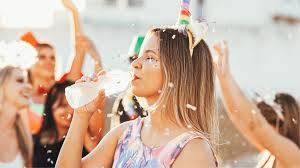

O Carnaval é a principal festa popular brasileira, sendo também o Carnaval mais famoso do mundo, chegando a atrair milhares de turistas de vários países.
 O Carnaval é a principal festa popular brasileira. As
comemorações ocorrem todos os anos, nos meses de fevereiro ou março, começando no sábado e estendendo-se até a Terça-feira de Carnaval.
As celebrações carnavalescas terminam na Quarta-feira de Cinzas, dia que marca o início da Quaresma. As festas de Carnaval são adaptadas de acordo com a história e a cultura local.
Em geral, as pessoas dançam, comem e bebem alegremente em festas, bailes de máscaras, bailes de fantasias, desfiles de blocos, escolas de samba, trios elétricos e até na própria rua.
O Carnaval é a principal festa popular brasileira. As
comemorações ocorrem todos os anos, nos meses de fevereiro ou março, começando no sábado e estendendo-se até a Terça-feira de Carnaval.
As celebrações carnavalescas terminam na Quarta-feira de Cinzas, dia que marca o início da Quaresma. As festas de Carnaval são adaptadas de acordo com a história e a cultura local.
Em geral, as pessoas dançam, comem e bebem alegremente em festas, bailes de máscaras, bailes de fantasias, desfiles de blocos, escolas de samba, trios elétricos e até na própria rua.
carnaval é feriado?
A data não é considerada um feriado nacional, então, qualquer folga depende de leis locais de cada estado.Cuidados com o Corpo Durante o Carnaval
Os cuidados com o corpo durante o Carnaval são essenciais, pois evitam problemas de saúde, como desidratação, intoxicações alimentares, insolações e alergias.
O cuidado com o corpo durante o carnaval deve fazer parte da preparação de todo folião. Os vários dias de agitação devem ser curtidos, portanto, com moderação, sendo essenciais os cuidados corporais para evitar problemas de saúde, como desidratação, intoxicações alimentares, alergias, insolações e contaminação por doenças.
Cuide da hidratação
O Carnaval brasileiro é uma festa que acontece no verão de nosso país, e, por isso, durante esse período, são comuns as altas temperaturas. Além disso, o aglomerado de pessoas nessas comemorações favorece que o ambiente torne-se mais quente. Não podemos nos esquecer ainda de que, durante o Carnaval, os foliões dançam bastante, e, com isso, há grande perda de suor. Também se observa uma grande ingestão de bebidas alcoólicas, as quais estão relacionadas com a inibição do hormônio antidiurético, aumentando, assim, a diurese (eliminação de urina).
Diante de tantos fatores que podem contribuir para a perda exagerada de água, é fundamental garantir uma hidratação correta para evitar desidratação. Recomenda-se, então, que seja feita a ingestão de grande quantidade de água e também de sucos naturais e de água de coco.
Durante o Carnaval, lembre-se de alimentar-se bem, entretanto, não se esqueça de ficar atento aos locais onde você vai comprar seus alimentos. Verifique sempre se o produto está com boa aparência e acondicionado de maneira correta. Verifique também os hábitos de higiene daquele que vende o produto e tenha atenção com a sua higiene, lembrando-se sempre de lavar as mãos antes de se alimentar. Além disso, não se esqueça de dar preferência a alimentos leves, evitando frituras e alimentos ricos em gordura.